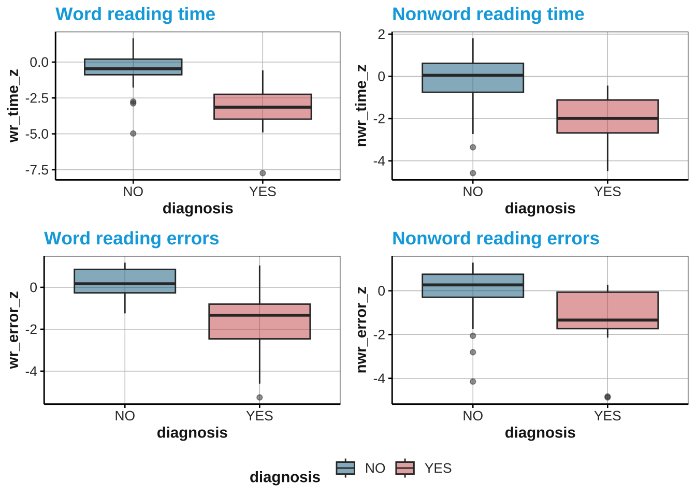
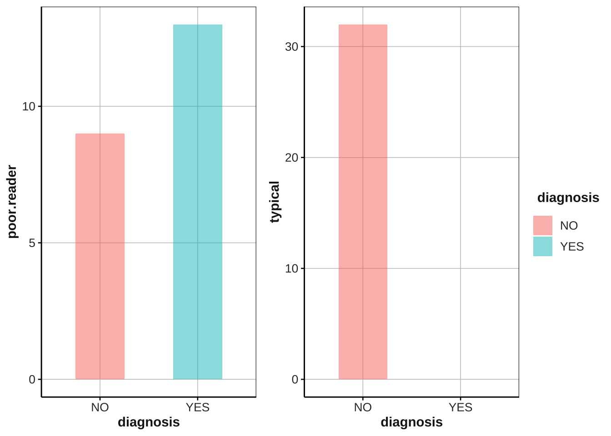
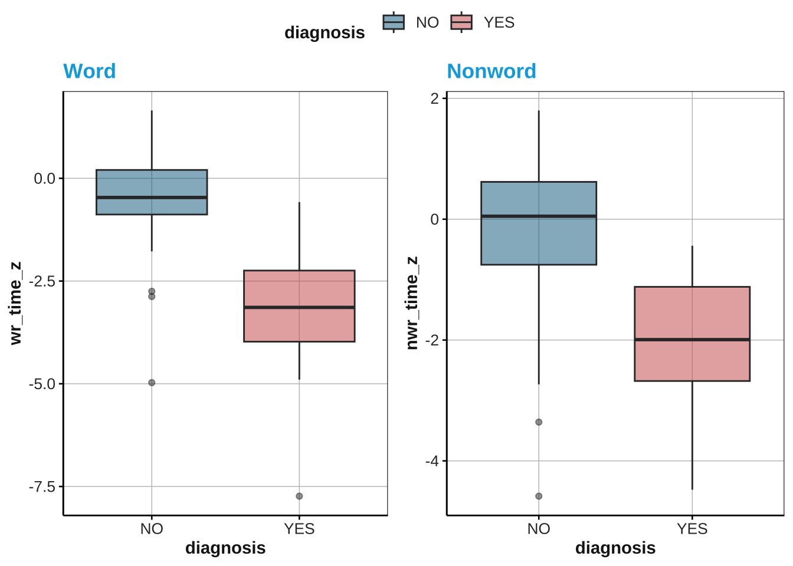
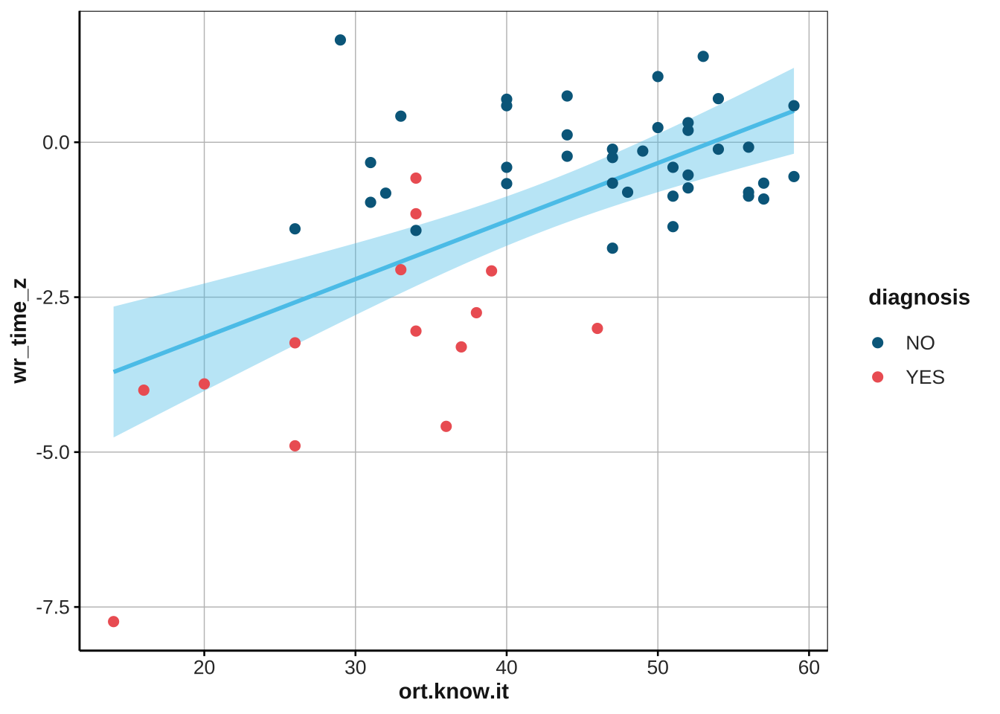

Lesson 4
10th/12th May, 2023
1 Last time…
mutate()andif_else()mutate()andcase_when()group_by() and summarize()Introduction to
ggplot()
2 Homework solutions
2.1 Exercise 1
Using the df2 data frame:
calculate the mean and standard deviation of
wr_time_zandnwr_time_zfor each diagnosis group.Round the mean and standard deviation to two decimal places using the
roundfunction e.g.round(mean(column),2)Finally, output it as a
kableobject
# solution:
read_csv("reading_tests2.csv") -> df
df %>%
# group by diagnosis to get computations for each group
group_by(diagnosis) %>%
summarize(
# word reading time
mean.wr.time = round(mean(wr_time_z),2), # round(,2) to round to two decimals
sd.wr.time = round(sd(wr_time_z),2),
# nonword reading time
mean.nwr.time = round(mean(nwr_time_z),2),
sd.nwr.time = round(sd(nwr_time_z),2)
) %>%
kable(col.names = c("Diagnosis", "Word reading time (M)", "sd", "Nonword reading time (M)", "sd")) %>%
kable_styling()| Diagnosis | Word reading time (M) | sd | Nonword reading time (M) | sd |
|---|---|---|---|---|
| NO | -0.52 | 1.18 | -0.21 | 1.20 |
| YES | -3.31 | 1.76 | -2.11 | 1.23 |
2.2 Exercise 2
Using the
dfdata frame, create four boxplots showing the scores ofwr_time_z,wr_error_z,nwr_time_z, andnwr_error_zfor each diagnosis group.Use the
ggarrangefunction to arrange the four plots into a grid with a common legend.
# solution
ggpubr::ggarrange(
df %>% ggplot(aes(x = diagnosis, y = wr_time_z, fill = diagnosis)) + geom_boxplot(alpha = .5) + scale_fill_manual(values = c("deepskyblue4", "indianred3"))+ ggtitle("Word reading time"),
df %>% ggplot(aes(x = diagnosis, y = nwr_time_z, fill = diagnosis)) + geom_boxplot(alpha = .5) + scale_fill_manual(values = c("deepskyblue4", "indianred3"))+ ggtitle("Nonword reading time"),
df %>% ggplot(aes(x = diagnosis, y = wr_error_z, fill = diagnosis)) + geom_boxplot(alpha = .5) + scale_fill_manual(values = c("deepskyblue4", "indianred3"))+ ggtitle("Word reading errors"),
df %>% ggplot(aes(x = diagnosis, y = nwr_error_z, fill = diagnosis)) + geom_boxplot(alpha = .5) + scale_fill_manual(values = c("deepskyblue4", "indianred3"))+ ggtitle("Nonword reading errors"),
common.legend = T,
legend = "bottom"
)
2.3 Exercise 3: challenge!
Read in the “reading_tests2.csv” dataset using the
read_csv()function andselectthe columns “ID”, “diagnosis”, “class”, and “fdp_wr_time”.Filterout all rows where the “class” column contains the value “uni”.Create two new columns called “poor.reader” and “typical” using the
mutatefunction: The “poor.reader” column should contain a 1 if the “fdp_wr_time” column contains either “RII” or “RA”, and 0 otherwise. The “typical” column should contain a 1 if the “fdp_wr_time” column contains either “PS” or “CCR”, and 0 otherwise. Use the functionif_elsefor this.Group the data by the “diagnosis” column using the
group_byfunction.Summarizethe data by counting the number of poor readers and typical readers in each diagnosis group using thesum()function and assign the results to a new variable called “tab1”.
Challenge! Create a grouped bar chart using the ggarrange() function from the “ggpubr::” package. The chart should have two panels, one for the number of poor readers and one for the number of typical readers. The x-axis should show the different diagnosis groups, the y-axis should show the count of poor readers (plot 1) and the count of typical readers (plot 2), and the fill color should be used to distinguish the diagnosis groups. You can use ggplot(aes()) + geom_col().
# solution
df %>%
# select the columns "ID", "class", and "fdp_wr_time"
dplyr::select(ID:class, fdp_wr_time) %>%
# filter out all rows where the "class" column contains the value "uni".
filter(class != "uni") %>%
# Create two new columns called “poor.reader” and “typical”
mutate(poor.reader =
if_else(fdp_wr_time == "RII" | fdp_wr_time == "RA", # condition poor.reader
1, # TRUE value
0), # FALSE value
typical = if_else(fdp_wr_time == "PS" | fdp_wr_time == "CCR", # condition typical
1, # TRUE
0)) %>% # FALSE
group_by(diagnosis) %>%
summarize(poor.reader = sum(poor.reader),
typical = sum(typical)) -> tab1
# Create a grouped bar chart
ggpubr::ggarrange(
# PLOT 1:
tab1 %>% ggplot(aes(x = diagnosis, y = poor.reader, fill = diagnosis)) + geom_col(alpha = .5, stat = "identity", position = position_dodge(), width = .5),
# PLOT 2:
tab1 %>% ggplot(aes(x = diagnosis, y = typical, fill = diagnosis)) + geom_col(alpha = .5, stat = "identity", position = position_dodge(), width = .5),
common.legend = T,
legend = "right"
) 
3 ggplot()
ggplot()is a powerful tool to visualize your dataaes():This option defines the aesthetics of the plot by mapping variables from the dataset to visual properties such as x-axis, y-axis, color, etc.
ggplot(data, aes(x = , y = , fill = , color = )) +
geom_()- After defining the aesthetics, you define the type of plot with
geom_()
3.0.0.1 Summary of some useful geom_()
geom_point(): Scatter plot with points.geom_line(): Line plot connecting points in order.geom_bar()/geom_col(): Vertical bar plot for categorical data.geom_boxplot(): Box plot representing the distribution of a variable.geom_density(): Density plot for visualizing the distribution of a variable.geom_violin(): Violin plot, a combination of a density plot and a box plot.geom_smooth(): Smoothed line or curve plot, typically used for trend lines or fitted curves.geom_errorbar(): Error bar plot, commonly used to represent uncertainty or confidence intervals.geom_jitter(): Jittered points plot, useful for avoiding overplotting in scatter plots.geom_text(): Text labels associated with specific data points in a plot.
4 Simple Linear Regression
Let’s start with two research questions to which we will answer with a simple linear regression model!
RQ1: What are the differences in word and nonword reading time between individuals with dyslexia (DYS) and typically developing students (TD)?
RQ2: How does orthographic knowledge predict word and nonword reading time?”
Dependent variables:
Word reading time
Nonword reading time
Independent variables:
Diagnosis (YES vs. NO)
Orthographic knowledge
Hypotheses:
DYS shows significantly longer (non)word reading times compared TD
Larger vocabulary associated with faster (non)word reading. Stronger effect for word reading time?
4.1 Continuous ~ Categorical
In the first RQ, we ask whether wr_time_z and nwr_time_z are predicted by diagnosis (YES vs. NO).
- The outcome/dependent variables here are continuous variables, while the predictor/independent variable is categorical (two levels).
Let’s look at it with a boxplot:

Are these differences significant?
We can check whether these differences are significant with a simple linear regression. The basic syntax is:
lm(
outcome.variable ~ # predicted by...
predictor.variable,
data = df # name of your df
)# MODEL 1: WORD READING ~ DIAGNOSIS
# Let's chech whether these differences are significant with a simple linear regression
# 1. make sure that chr. variables are transformed into fct.
# 2. run the model 4.1.1 Interpretation:
- To check the output of a model you can use
summary()
# syntax
summary(model_name)A) Reading a summary output:
# summary Estimates: These represent the average change in the response variable (dependent variable) associated with a one-unit increase in the predictor, assuming all other variables are held constant. Positive coefficients indicate a positive relationship, while negative coefficients indicate a negative relationship.
p-values: Assess the significance of each coefficient. If the p-value is below a predetermined significance level (e.g., 0.05), it suggests that the predictor variable has a statistically significant impact on the response variable.
R-squared: The R-squared value (often labeled as “Multiple R-squared”) represents the proportion of the variance in the response variable explained by the model. It ranges from 0 to 1, with a higher value indicating a better fit of the model to the data.
Residuals: Examine the residual plots to assess the model’s assumptions. Residuals should be randomly scattered around zero, indicating that the model adequately captures the underlying patterns in the data. Patterns or deviations in the residual plot may suggest potential issues with the model.
F-statistic: The F-statistic measures the overall significance of the model. Look for a small p-value (< 0.05) associated with the F-statistic, indicating that the model as a whole is statistically significant.
B) Visualization
A much easier way to interpret a model is by visualizing its output. One way to do it is using sjPlot::plot_model()
# install package!
# install.packages("sjPlot")
library(sjPlot)# syntax
plot_model(model_name, type = "", terms = c("pred1","pred2"))Let’s visualize the output of our first model
# plot model m1 ---
Nonword reading
# MODEL 2: Nonword reading
# lm
# summary
# plot_model 4.2 Continuous ~ Continuous
In the second RQ, we ask whether wr_time_z and nwr_time_z are predicted by orthographic knowledge
- Both the outcome/dependent variable andthe predictor/independent variable are continuous variables
Let’s look at their relation with a scatter plot descriptively:

Again, are these differences significant?
# EX 2: Let's predict word_reading by orthographic knowledge
# lm
# summary
# plot_model # EX 3: Let's predict noword_reading by orthographic knowledge
# lm
# summary
# plot_model 5 Homework
Answer at least one of the following RQs with a simple linear model. Interpret the model using summary and plot_model().
RQ1: What are the differences in word and nonword reading error between individuals with dyslexia (DYS) and typically developing students (TD)?
RQ2: How does orthographic knowledge predict word and nonword reading error?
No challenge this week!